湖泊化石
進入六月之後，每天醒來看到的太陽都越來越大，氣溫也越來越熱，今天依舊是個沒什麼風的天氣，灼熱的空氣凝結在四周。
處在如此乾燥的環境，本來應該還沒有流出汗，就已經揮發，但是這幾天都是汗流浹背的在騎車，可以想見這汗流的量之多。
早上出發之後。將502省道騎完，就算離開三道嶺了，重新接回312國道，往今天的目的地，紅山口前進。
紅山口在地圖上根本找不到，是一個小不拉嘰的地方，但是從三道嶺出發騎一百多公里的路，就只有紅山口可以讓我吃住。

早餐沒在市區吃，上路之後隨便吃幾個巧克力派和餅乾就算解決掉了。
翻包包找餅乾的時候，發現昨天才買的杏子，因為高溫的關係，買來的時候還是翠綠的外表，
現在則已經又紅又黃，整顆都軟趴趴的，完全熟爛了，丟掉太可惜，所以就沿路吃起來熟過頭的杏子，
吃完之後，右手都變的黏答答的，附帶一提，不是我自誇，吃完這些熟爛的杏子，肚子一點事情也沒有。
路上放了一些很沒有意義的白色雕像，有馬、羊和恐龍~_~
雖然說沒什麼意義，但我還是拍了照片做紀念。
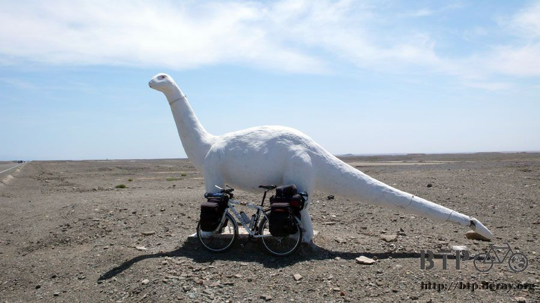
進入天山山脈之前，在最後有人煙的國道邊餐廳吃了午餐。

點了一盤豆子炒肉配饅頭吃之後，在菜上桌之前，習慣性的坐在店門口吹風，但是連一丁點的風都沒有。
煩人的蒼蠅倒是不停的來打擾休息的時光，所以就乖乖的進到餐廳裡面等著吃飯。

豆子炒肉很好吃，感覺很久都沒有吃到豆子了，配著又大又白又胖的饅頭，很讚的一餐。

窩在餐廳裡面，看著太陽照的小多的影子越來越短，日正當中，炎熱難耐，手錶的溫度計顯示37.4度。
總不能窩在餐廳一輩子吧？喝光兩瓶水，然後用餐廳的熱水瓶重新裝滿兩瓶。
當我自以為準備充足的時候，老闆娘說我只帶這一點水不夠吧？
我的老天，接下來我要走的是什麼樣的路？得帶多少水才算夠呢？~_~
從餐廳開始騎四十公里的路，緩緩的爬坡，進入山脈之後，就是連續八公里的上坡，
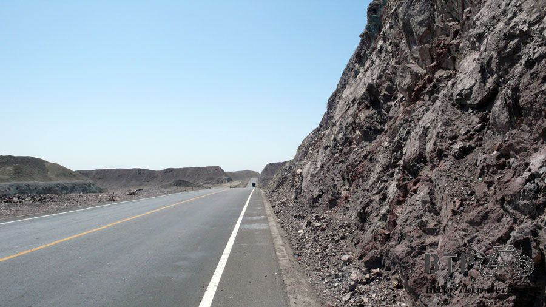
等到達這段路的高點之後，就可以享受十八公里的連續下坡。
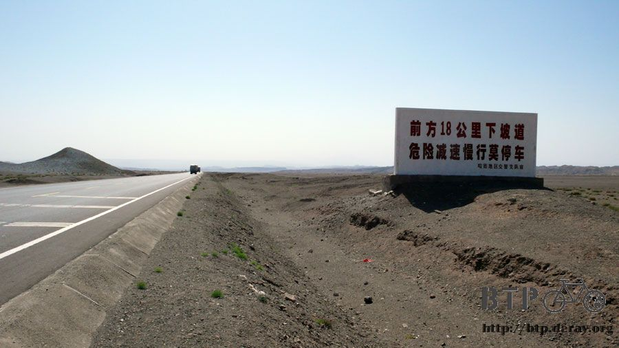
上坡跟下坡的景色都很漂亮，像是山水畫一樣的風景，沿著國道不停的展開，兩旁的山勢不算高，但是地質都很有特色，
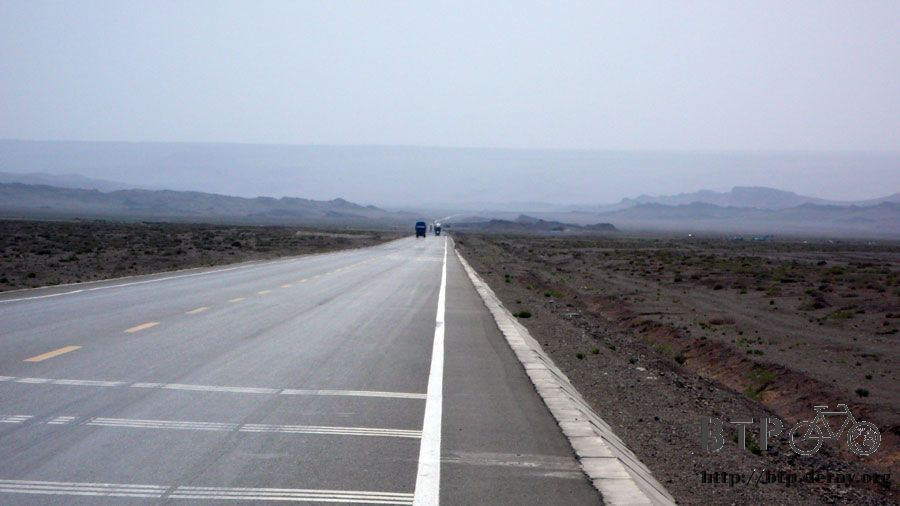
有大岩石、沙漠山、峭壁、懸崖等，看得目不暇給。

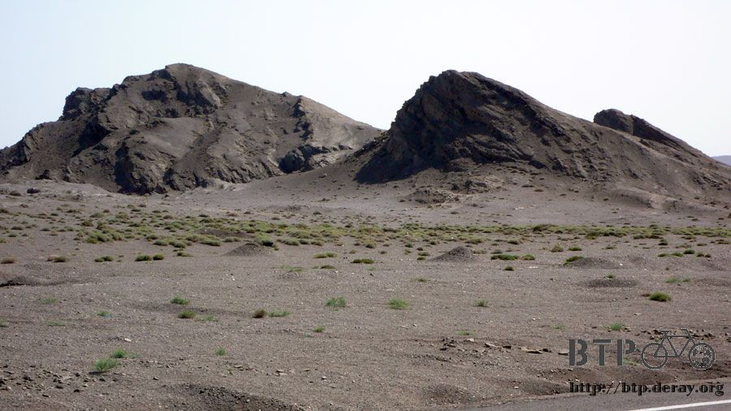
三隻放牧的駱駝，在吃看起來就很難吃，又乾又黃的雜草。可能是怕駱駝跑遠，前腳都用繩子綁在一起，有點可憐。
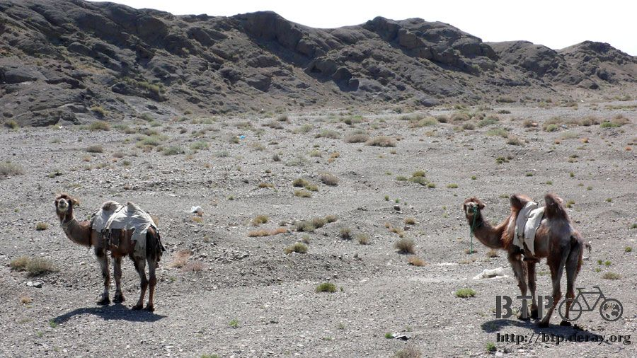
下坡路段危險多，東西載超多的大卡車怕衝出國道，都用超慢的速度行駛。
一輛接著一輛的被我超車，下坡最快的時候可以超過五十公里，道路養護的情況很好，所以不用怕會有坑洞導致摔車。

聽說三道嶺到紅山口這一段路是天山的風口，但是騎一整天下來，倒也沒什麼特別的感受，霹靂無敵熱則是真的。

遇到美景，光是停下車來欣賞還覺得不過癮的時候，就會牽著小多離開道路過去拍照。
用定時十秒自拍的功能，為了要抓準時間拍到我跳起來的瞬間，這一張普通的照片，我跳了起碼有二十次=..=

在爽快的下坡路段中，看到遠方有一整片和四周景色很不搭嘎的淺咖啡色，我以為是沙漠，就騎過去玩。
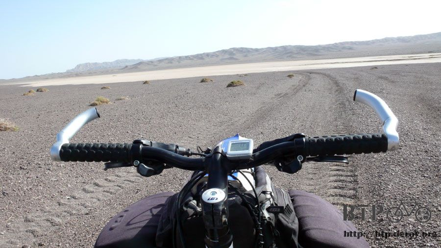
靠近一看發現不是沙子，從邊緣的形狀和那乾枯龜裂的表面來看，這反倒像是一個湖泊的化石。
也許很久很久之前，這裡也曾經是個雪水綠洲，但是目前已經完全都乾掉了，真的是連一根草都長不出來那樣的悲哀。

騎著單車在乾掉的湖面兜圈子，發揮一下想像力，看著如今這裡的面貌，想像過去它曾經是清澈湖水、生意盎然的樣貌。
我們可以看著湖泊化石的現在，想像它過去的樣子。
換個角度，請看一下我們現在生活的環境，它目前仍然還算美好，但是它的將來，可能就跟這個湖泊的現在一樣，只有死寂。
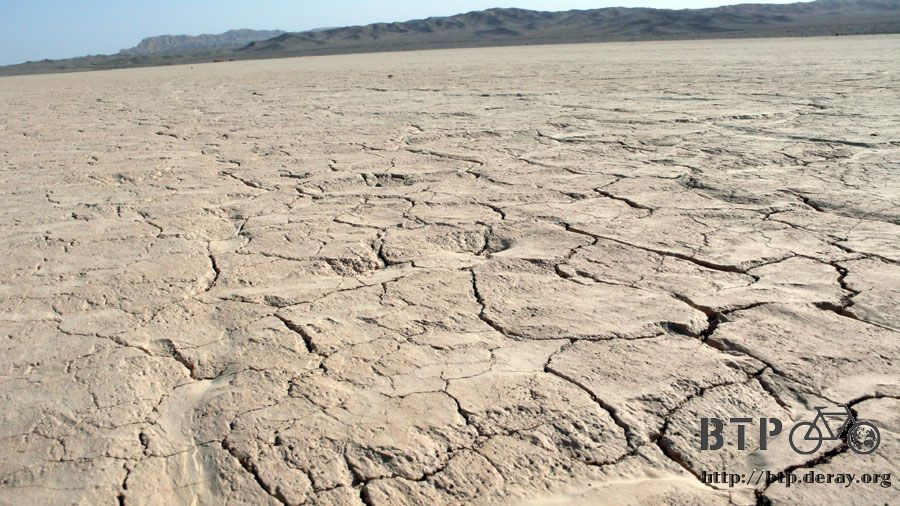
我在這裡舉起了『Bike To Protect Our Planet‧騎單車 護地球』的活動旗幟。

如果這個畫面對你來說有什麼意義的話，請你以自身為出發點，為地球、更為你自己和你心愛的家人，做點不會讓將來的你後悔的事情。
我的力量真的很小，呼籲的聲音更是微弱，但我希望自己的想法能夠傳達給和我一樣居住在這個地球上的人，也就是，你。
一起關心地球暖化的問題，但不僅僅是關心，而是發揮你的影響力和行動力，一起來幫地球降溫。

離開湖泊化石之後，發現剛剛就這麼跑下來實在有點傻，因為要重新爬回路面，又讓我在砂石的斜坡中又滑又摔的折騰好久才上去。
相當不幸的，我又看到路旁有嗡嗡嗡的東西在飛舞，又是因為養蜂人開車載著蜂窩，而被遺留在沙漠中的可憐蜜蜂，簡稱『沙漠蜜蜂』。
額頭上的三個腫包還沒有消，被蜜蜂螫到的瞬間那種劇痛我也還沒有忘，現在沙漠蜜蜂又出現了....而且沿路的數量比上次還多
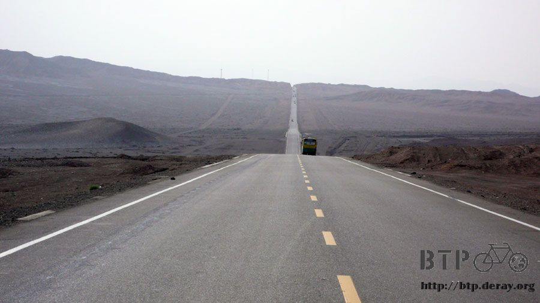
有了上次的教訓，知道不要激怒牠們，也許就沒事，井水不犯河水，我靜靜的騎車經過應該不會怎麼樣吧？
爬著通往紅山口最後兩公里的超陡斜坡，我再怎麼低調騎車，沙漠蜜蜂們還是注意到我的存在，開始圍繞著我飛舞。
發出嗡嗡的聲音不停的撞擊我身上所有的地方，臉、頭、眼鏡、耳朵、手、身體、腿。
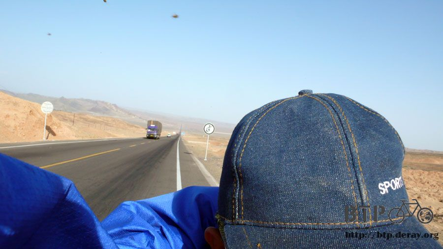
就算我很驚恐，還是跟自己說相安無事，不要趕牠們，不然又激怒牠們就慘了，身上爬了三、四隻的蜜蜂，我也不敢拍走牠們，
就任牠們在衣服上爬來爬去，為了快一點離開斜坡，不敢輕鬆的慢慢騎，一路重踩騎的腳都痠痛了，好不容易騎到坡頂，
想藉由下坡的高速甩掉牠們，計劃本來很成功，沙漠蜜蜂一時沒跟上我的速度，通通被拋在後面。
但是下坡滑到一半，我看到這景色實在太漂亮，自己猛按煞車停下來拍照，忘了威脅還沒解除，沙漠蜜蜂趁我停下來的空檔，
又通通的圍繞在我身邊，似乎發現我要逃跑的企圖，感覺變的比較兇狠，可是好加在還沒被螫咬。
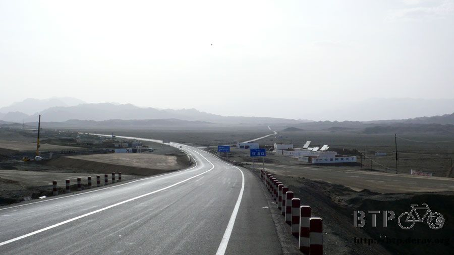
滑下斜坡到紅山口，這邊真是一個花生米大的小地方，難怪地圖上會沒標記，
連星星峽這樣小的地方，和紅山口相比之下，簡直可以說是大都市也不為過了。
剛到紅山口，就被餐廳的員工很大聲的吆喝聲嚇一跳。
招手叫我過去，我說我要先找地方住店，等等才吃飯，結果這裡就可以住店，一晚上十塊錢。
終於可以躲到房子裡面不要再受沙漠蜜蜂的騷擾，我跟員工說蜜蜂很多而且會螫人，快點讓我進去房子裡。

但因為牽著小多的關係，硬是要從後門繞才行，前門進不去。
員工一派輕鬆的說『沒事，這蜜蜂不會螫人的』，話才一講完。
『唉唷！好痛喔！』我的左耳上方又被一隻可惡的蜜蜂給螫了一下，痛的我用力拍掉蜜蜂，刺還插在耳朵上。
員工看到我被螫，知道我不是在開玩笑的，就趕緊叫我牽著車從後門進去，我沒命的逃到房子裡，才解除危機。
一直以為騎單車旅行，路上的野狗才是最大的威脅，還特地打了狂犬病的預防針。
結果卻是一直被蜜蜂螫咬，已經被螫四個腫包了，那種痛，如果要具體形容的話，就是拿著燒紅的鐵絲刺進體內那樣的燒灼感。
只要再被螫一次，等我到城市之後，我一定要去買養蜂人頭上戴的那種蚊帳帽子。
這間餐廳兼旅館很酷，房間小小的，但還算乾淨，可是沒有電，要晚上入夜了才會發電。
黑黑的房間裡面，唯一的照明就是天花板挖了一個洞，讓陽光可以照進來。
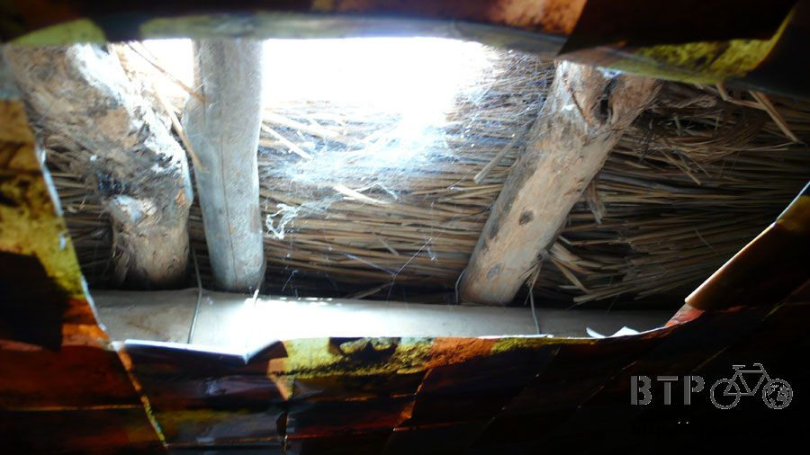
翻著包包，拿出昨天洗好還有一點濕的、包在塑膠袋裡的襪子出來晾乾，一拿出來整雙襪子都是熱的。
數位相機也是一整天都熱呼呼的，這麼熱的天氣我居然沒有中暑，看來把自己包的像是銀行搶匪這一招很不錯。
我拿著臉盆和毛巾，想裝點水擦一下流汗黏黏的身體，這邊也沒有水龍頭，水放在蓄水池裡，我問說這水是井水還是雪水嗎？
結果不是這邊就可以取得的水，這水是買來的，開著卡車去有水的地方買然後載過來，相當的珍貴。
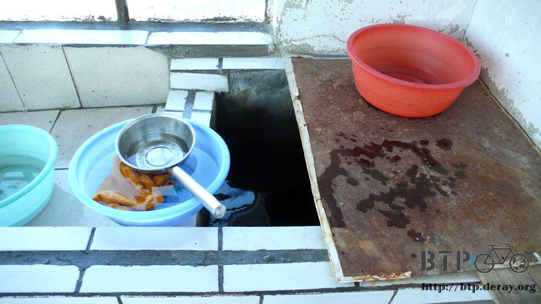
我舀了半盆水，經過多日的練習，現在只需要半盆水就可以將全身都擦洗乾淨，外加洗頭。
另外再舀半盆水，依序從比較乾淨的頭巾開始洗，最後洗到襪子，將汗漬和飛沙都簡單洗掉。
總計一盆水就可以搞定全部的盥洗和衣物洗滌，剩下的水還可以把髒兮兮的鞋子也搓洗一下，一滴都不浪費。

偏僻地方物資取得極不容易，從紅山口要去哪裡都是一百公里以上的距離，所以物價相對的也就比較高一點。
這是應該的，我完全理解一瓶可樂在市區和在沙漠中的價錢是要有所差異，我也很樂意讓旅館的人賺這筆錢。
九點過後房內昏暗的小燈終於亮起來了，帶了很多東西都是必須要充電才有辦法使用，沒電的話就跟我沒水喝一樣的傷腦筋。
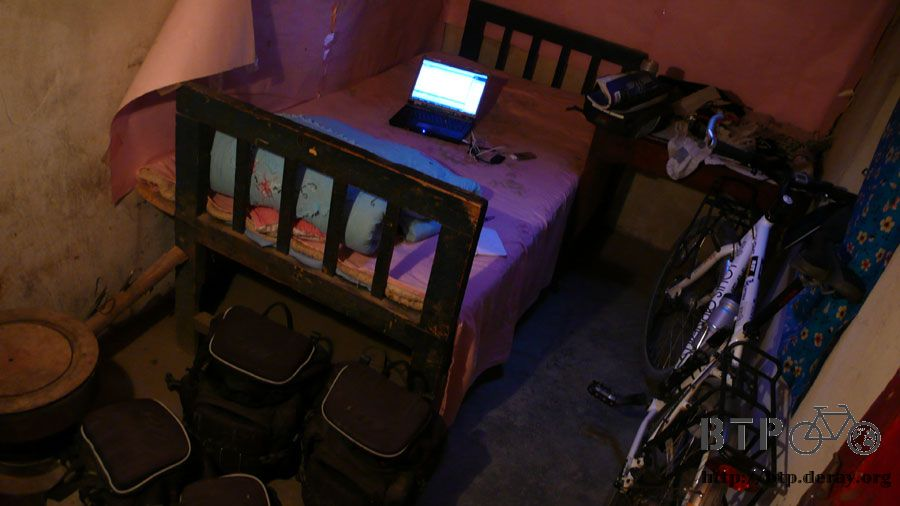
這邊養了幾隻雞在外頭閒晃，房子裡面則養了兩隻很膽小的貓，我花了好一番工夫才把牠們都騙出來拍照。

晚餐在這裡吃蛋炒飯和回鍋肉，員工們都是重慶人，我九點半才出來吃晚餐，已經覺得很晚了，結果是整間房子裡最早吃飯的一個人。
這時候太陽才剛要下山，天空還很亮，實在不像是九點半，我問他們都什麼時候吃飯？
他們只回答說『還早呢～』具體時間不明。
回鍋肉加了豆豉下去炒，味道還蠻鹹的，流了一天的汗趁機會好好補充一下鹽份，把醬汁都和在炒飯中一起吃光光。
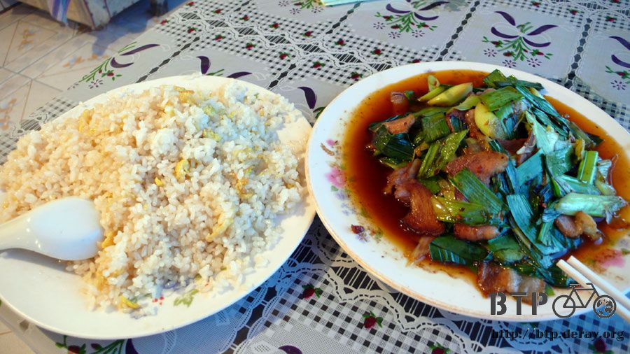
用過餐後在左耳和額頭塗上小護士消腫，明天就可以騎到大都市『鄯善』，拜託不要再有蜜蜂攻擊我，保佑保佑。
繼續閱讀：6.5 站哪都熱！
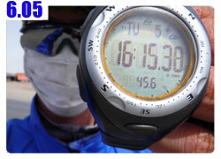
中國-人民幣－ 1：4.3 台幣
6.4 |
總計：47元 |
午餐豆子炒肉12元、饅頭1元、汽水4元、晚餐蛋炒飯5元、回鍋肉15元、住店10元 |
|